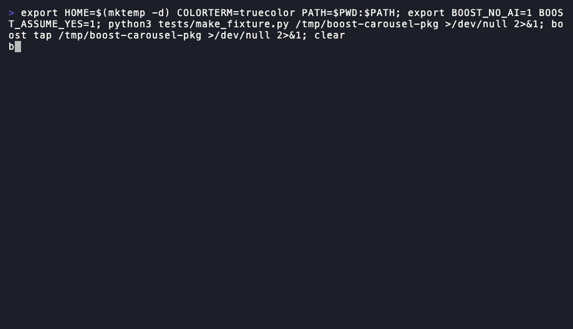

zsh — boost install

Package Management
boost install
Install a skill from a tap registry
One command copies a skill into the canonical store, symlinks it
into every agent you've got enabled — Claude Code, Windsurf, Cursor — and
records it in the lock file with a quality score attached. No hand-copying
SKILL.md into three different folders.
uninstallsyncupdatebundle
importpinsnapshotexport
14 commands in this group.
regenerate: vhs docs/carousel/tapes/install.tape